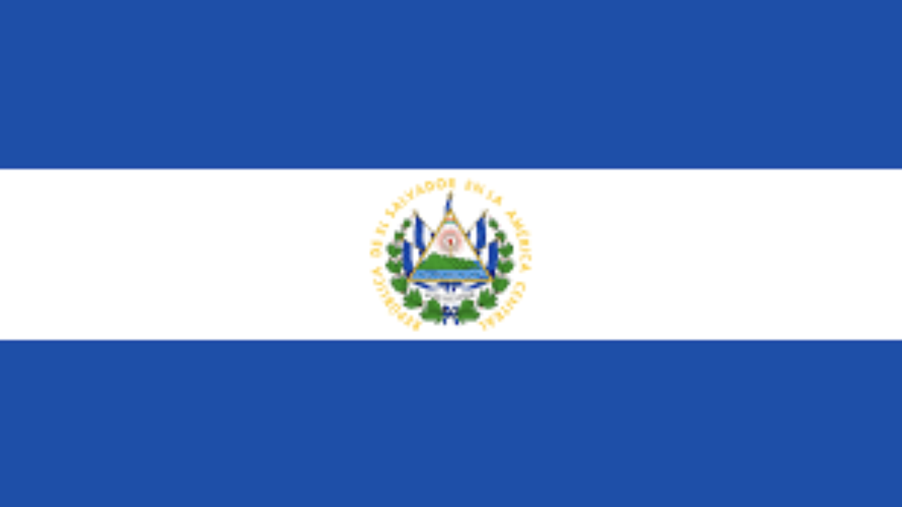
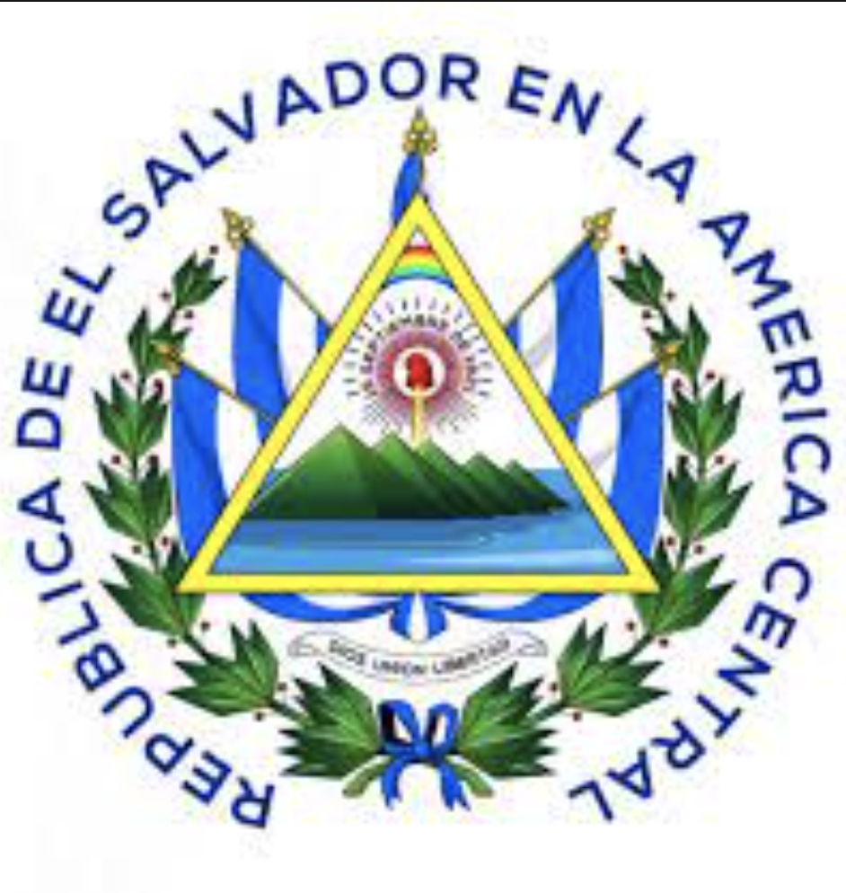
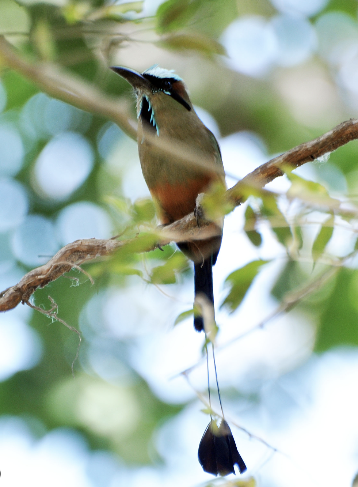

Símbolos Patrios de El Salvador
Bandera de El Salvador

La bandera de El Salvador consta de tres franjas horizontales de igual tamaño. La franja superior e inferior son de color azul, mientras que la franja central es de
color blanco. En el centro de la franja blanca se encuentra el escudo de armas nacional.
Escudo de El Salvador

El escudo de El Salvador muestra un triángulo dorado con un volcán, simbolizando los tres principales volcanes del país. También incluye un valle verde y un
océano azul que representan la belleza natural de El Salvador. Encima del triángulo hay un gorro frigio rojo, un símbolo de libertad, y dos ramas de laurel que
representan la victoria.
Flor Nacional

La flor de izote (Yucca Gigantea) es la flor nacional de El Salvador. Es un símbolo de resiliencia y fuerza, ya que puede sobrevivir en condiciones difíciles y es
parte de la cultura culinaria salvadoreña.
Ave Nacional

El torogoz (Eumomota Superciliosa) es el ave nacional de El Salvador. Es conocido por su plumaje vibrante y colorido. Su presencia en el país es un reflejo de la
diversidad de vida silvestre y la belleza natural.
Breve Historia de El Salvador
El Salvador, nación centroamericana, ha transitado por una historia marcada por la diversidad cultural y la colonización española en el siglo XVI. Tras independizarse
en 1821 y desligarse de la federación centroamericana en 1838, el país experimentó conflictos políticos y una economía centrada en el cultivo de café. La guerra civil
de la década de 1980 dejó heridas profundas y culminó en los Acuerdos de Paz de 1992, estableciendo un camino hacia la democracia. No obstante, El Salvador continúa
enfrentando desafíos socioeconómicos y problemas de violencia de pandillas, mientras que en años recientes, la nueva administración ha generado atención por su
enfoque tecnológico y decisiones que nadie se atrevía a tomar.
En el presente, El Salvador sigue lidiando con la pobreza, la criminalidad y la emigración, mientras busca soluciones para mejorar la calidad de vida de su población.
El país enfrenta un panorama complejo, con avances democráticos y retos persistentes en su camino hacia un desarrollo más equitativo y sostenible.
Extensión Territorial
El Salvador posee una extensión territorial aproximada de: 21,041 km²
División Política de El Salvador
El Salvador está dividido administrativamente en 14 departamentos, que son las subdivisiones principales del país. Cada departamento se compone de varios municipios,
que a su vez están formados por cantones y estos por caseríos. A continuación, se presentan los nombres de los 14 departamentos de El Salvador:
- Ahuachapán
- Cabañas
- Chalatenango
- Cuscatlán
- La Libertad
- La Paz
- La Unión
- Morazán
- San Miguel
- San Salvador
- San Vicente
- Santa Ana
- Sonsonate
- Usulután
Lugares Turísticos Importantes
- Ruta de las Flores: Esta pintoresca ruta recorre varios pueblos encantadores en las montañas de El Salvador, como Juayúa, Apaneca, Ataco y Nahuizalco. Ofrece
vistas panorámicas, mercados locales, arte callejero, cafetales y una gran variedad de actividades al aire libre.
- Playa El Tunco: Ubicada en la costa del océano Pacífico, Playa El Tunco es un destino popular para los amantes del surf. Sus olas y ambiente relajado atraen a
surfistas de todo el mundo. Además de las playas, la zona cuenta con una animada vida nocturna y opciones para practicar yoga y relajarse.
- Parque Nacional El Imposible: Este parque nacional es un paraíso para los amantes de la naturaleza y el ecoturismo. Ofrece una gran diversidad de flora y fauna
en un entorno montañoso y tropical. Los visitantes pueden realizar caminatas, observar aves y disfrutar de impresionantes paisajes.
- Joya de Cerén: Conocido como la "Pompeya de América", Joya de Cerén es un sitio arqueológico que ofrece una visión única de la vida cotidiana en una aldea maya
prehispánica. Fue enterrado por cenizas volcánicas y ha sido preservado en excelente estado, brindando una mirada fascinante al pasado.